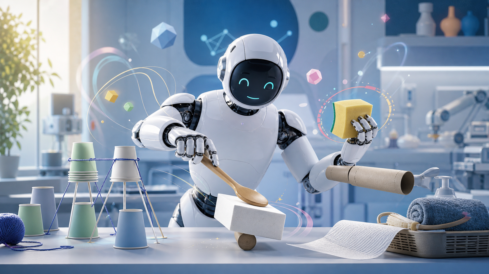

칼이 없으면 접시로 — 로봇의 창의적 도구 사용 AI 'GROW²'

원래 용도가 아닌 물체를 창의적으로 도구로 써내는 로봇 AI 'GROW²'가 공개됐어요. 칼이 없으면 접시 가장자리로 케이크를 자르는 식으로, 상황에 맞게 물건의 쓸모를 재해석해요. Vision-Language Model의 상식 추론과 기하학적 판단을 결합해 대규모 훈련 없이도 구현했어요.
인사이트: AI가 맥락을 읽고 도구를 재해석하는 '즉흥 능력'이 생겼어요. 이런 유연한 문제 해결 방식은 인터랙티브 설치나 퍼포먼스 로봇 아트에서 예측 불가능한 창의성을 만들어낼 수 있어요.